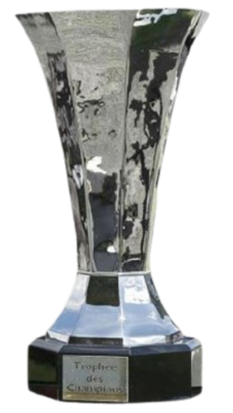
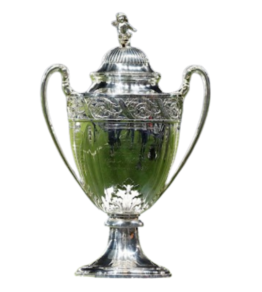
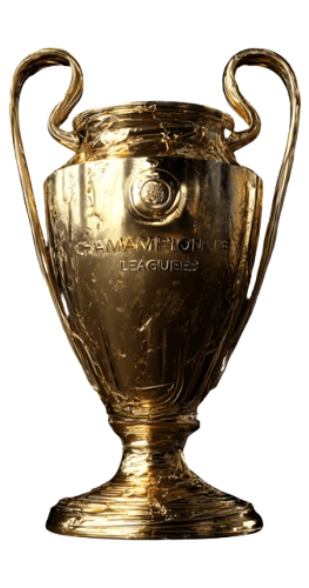
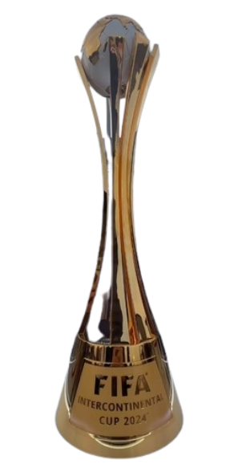
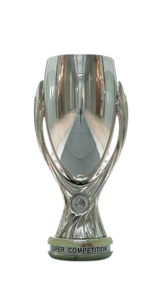

Jogos
428
A fase mais luxuosa da carreira, com domínio doméstico, peso internacional e uma coleção rara de noites gigantes.
| Competição | Jogos | Gols | Assistências |
|---|---|---|---|
| Ligue 1 | 260 | 139 | 199 |
| Coupe de France | 32 | 19 | 34 |
| Supercopa da França | 9 | 2 | 1 |
| SuperCup | 5 | 0 | 2 |
| Champions League | 116 | 57 | 129 |
| Mundial | 5 | 8 | 7 |
| SuperMundial | 1 | 1 | 0 |
| Total | 428 | 237 | 385 |




